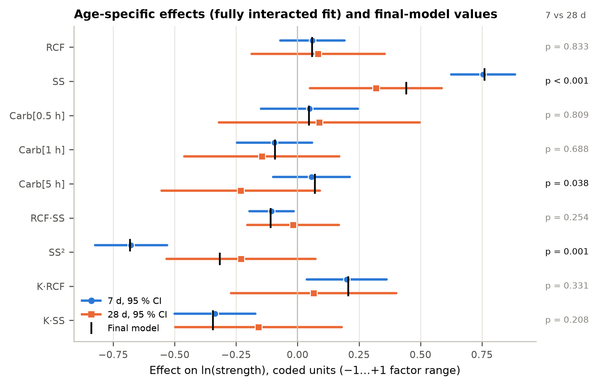
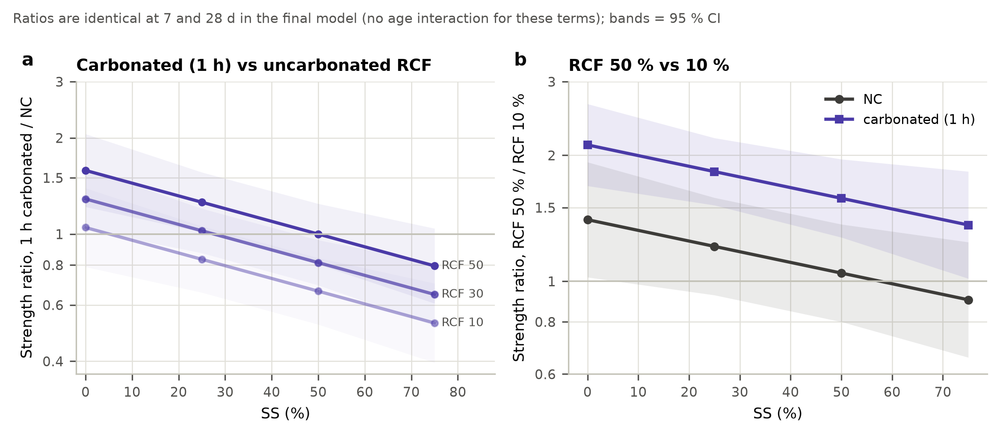
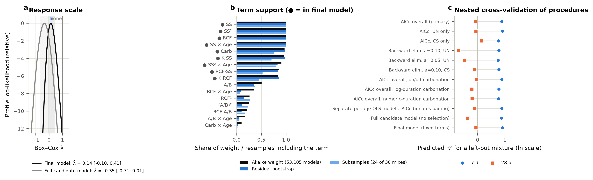
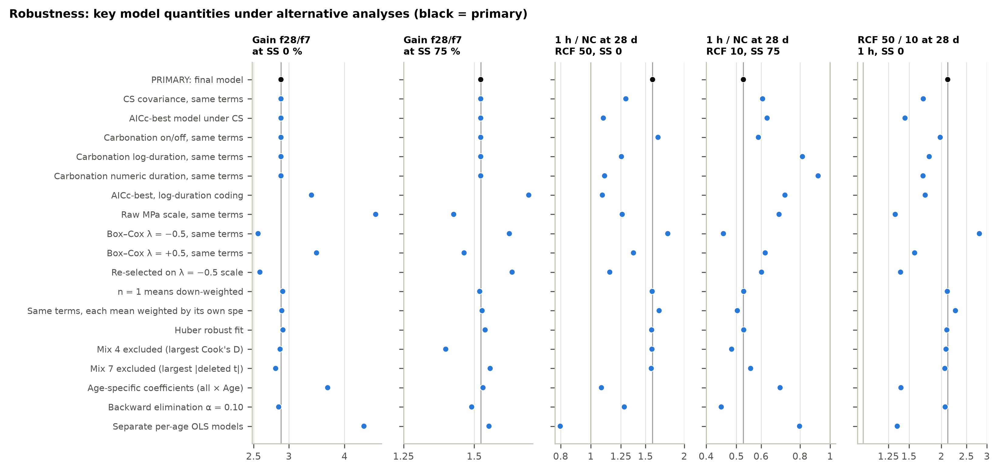
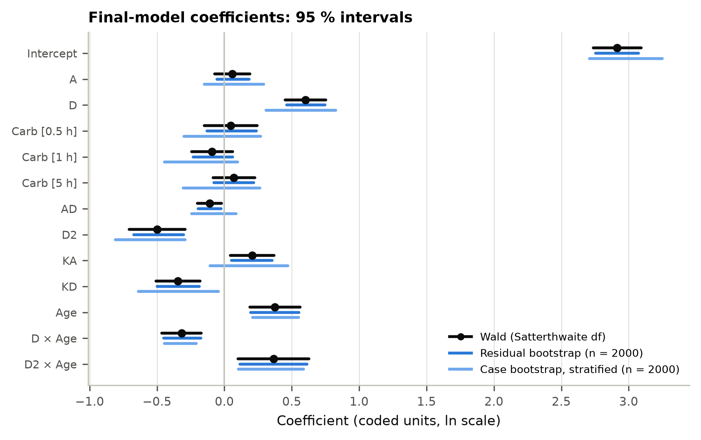
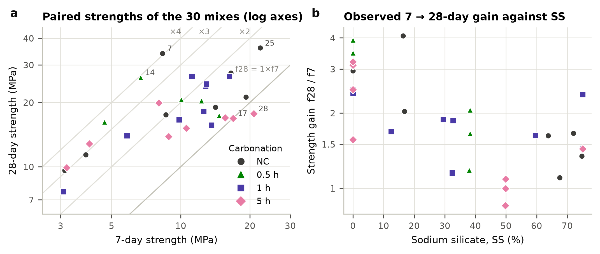

Compressive strength · 30 mixtures tested at 7 and 28 days · linear mixed model
Paired 7/28-Day Strength Model
One model for both curing ages, fitted to the updated corrected results of the 30 mixes (see What changed). Curing age is a two-level factor, carbonation a four-level factor, and the 7- and 28-day results of each mixture are treated as a correlated pair. The terms were chosen by an exhaustive search of 53,105 hierarchical models and then validated before any effect was interpreted.
Data: data/strength_7d_28d_corrected.csv · Analysis: analysis/run_analysis.py · 2,000 resamples per resampling scheme · built 2026-09-29
What the data support
Evidence labels follow one rule for every term. Robust: in the final model with p < 0.01, kept in ≥ 90 % of residual-bootstrap and ≥ 80 % of subsample re-selections. Moderate: in the final model with p < 0.05 and kept in ≥ 60 % of residual-bootstrap re-selections. Suggestive: not in the final model but added-term p < 0.10 or kept in ≥ 50 % of residual-bootstrap re-selections. Not detected: none of these. A finding carries the weakest label of the terms it rests on.
Robust
Strength rises with SS to a peak at mid-range SS, at both ages
SS and SS² are the largest terms (p < 0.001, p < 0.001) and are kept in at least 99 % of re-selections. The peak lies at SS 58 % (7 d) and 64 % (28 d) for uncarbonated mixes at RCF 30 %, and lower (SS 46 % at 7 d, 37 % at 28 d) for carbonated mixes at RCF 50 %.
Robust
The 7 → 28-day gain is set by SS
f28/f7 = 2.88 (95 % CI 2.40–3.45) at SS 0 %, falls to a minimum of 1.36 near SS 54 % and is 1.53 (1.20–1.95) at SS 75 % (SS × Age p < 0.001). NaOH-only mixes gain most. SS is the only age-dependent variable in 86 % of residual-bootstrap and 89 % of subsample re-selections. The curvature of the gain (SS² × Age, p = 0.008) is moderate.
Moderate
Carbonated RCF helps in NaOH-rich mixes and hurts in silicate-rich ones
Carbonated × SS p < 0.001. At RCF 50 % and SS 0 % a 1 h carbonated mix is ×1.58 (95 % CI 1.22–2.06; p = 0.002) the uncarbonated one; at RCF 10 % and SS 75 % it is ×0.53 (95 % CI 0.40–0.70; p < 0.001). The crossover SS rises with RCF, from 5 % at RCF 10 % to 50 % at RCF 50 % (1 h). Kept in 98 % of residual-bootstrap but only 71 % of subsample re-selections: it rests on the 8 uncarbonated mixes.
Moderate
RCF raises strength when it is carbonated and when SS is low
Carbonated × RCF p = 0.015, RCF × SS p = 0.019. Going from 10 to 50 % RCF multiplies strength by ×2.12 (95 % CI 1.69–2.65; p < 0.001) for carbonated RCF at SS 0 %, and by ×0.90 (95 % CI 0.66–1.24; p = 0.51) for uncarbonated RCF at SS 75 %. RCF never lowers strength significantly. The case-bootstrap intervals of carbonated × RCF and RCF × SS include zero, so these two terms depend on a few mixtures.
Suggestive
Carbonation duration (0.5, 1, 5 h): no difference in level; a smaller 28-day gain after 5 h is possible
The three carbonated levels do not differ in level (p = 0.098); on/off coding fits about equally well (ΔAICc −0.83). Carbonation × age is suggestive but not selected (added-term p = 0.081, ΔAICc +4.1). In the age-specific fit the 5 h level gains less than NC (×0.75, 95 % CI 0.57–0.98; p = 0.038), a single contrast that the joint test does not support. The only mixes that do not gain strength from 7 to 28 days are 5 h mixes (mix 17, 5 h, RCF 36.6 %, SS 49.88 %: 16.90 → 16.88 MPa; mix 28, 5 h, RCF 36.6 %, SS 49.83 %: 20.82 → 17.75 MPa).
Not detected
A/B ratio (0.42–0.48): no effect detected
No A/B term improves the model at either age (A/B p = 0.74, (A/B)² p = 0.26, A/B × Age p = 0.29). A/B curvature is selected only if the 28-day variance is forced equal to the 7-day variance (CS); under nested cross-validation that search predicts 7-day strength clearly worse (R² 0.76 vs 0.89) for a small gain at 28 days (0.14 vs -0.09).
How far to trust 28-day predictions
At 7 days the model predicts a left-out mixture with R² 0.91 and an error of 2.1 MPa, close to the 2.2 MPa scatter between replicate batches. At 28 days the residual scatter is 35 % (replicate batches 19 %) and a left-out mixture is predicted with R² -0.06 (RMSE 7.6 MPa). Under nested cross-validation, where the selection is repeated in every fold, no procedure predicted 28-day strength of a new mixture with R² above 0.14 (primary procedure -0.09); the procedure that reached it (AICc, CS only) predicted 7-day strength with R² 0.76 against 0.89. Weighting each mean by its specimen scatter does not help (see Robustness). The 28-day equation gives the expected trend, with its terms estimated jointly from both ages, but the strength of an individual new mixture at 28 days is uncertain by a factor of about 2.1 either way (95 % prediction interval; 1.4 at 7 days).
What changed with the corrected data
The protocol was re-run unchanged on the corrected data. It selects the same model as before (same terms, UN covariance). The largest coefficient change is Age (0.443 → 0.375, 0.7 standard errors). Prediction of a left-out mixture: 7 d R² 0.90 → 0.91, 28 d R² 0.09 → −0.06 (RMSE 7.7 → 7.6 MPa). Gain f28/f7 at SS 0 %: 2.92 → 2.88; at SS 75 %: 1.58 → 1.53.
Quantity
Previous corrected data
Current corrected data
Selected terms
A D Carb AD D2 KA KD Age D.Age D2.Age
A D Carb AD D2 KA KD Age D.Age D2.Age
Within-mixture covariance
UN
UN
Box–Cox λ (selected model)
0.13
0.14
AICc of the final model
11.51
9.66
AICc of the best CS model
16.43
16.05
Replicate (pure-error) SD, 7 d (MPa)
2.5
2.2
Replicate (pure-error) SD, 28 d (MPa)
4.1
3.9
Residual SD 7 d (ln)
0.153
0.147
Residual SD 28 d (ln)
0.327
0.335
7/28-day correlation within mixture
0.49
0.52
R² 7 d
0.95
0.96
R² 28 d
0.34
0.23
Predicted R², leave one mixture out, 7 d
0.90
0.91
Predicted R², leave one mixture out, 28 d
0.09
−0.06
RMSE of a left-out mixture, 7 d (MPa)
2.2
2.1
RMSE of a left-out mixture, 28 d (MPa)
7.7
7.6
Nested CV pred. R² of the selection procedure, 7 d
0.87
0.89
Nested CV pred. R² of the selection procedure, 28 d
0.03
−0.09
Lack of fit p, 7 d
0.89
0.82
Lack of fit p, 28 d
0.089
0.087
Gain f28/f7 at SS 0 %
2.92
2.88
Gain f28/f7 at SS 37.5 %
1.56
1.46
Gain f28/f7 at SS 75 %
1.58
1.53
SS of minimum gain (%)
55
54
1 h / NC at RCF 50 %, SS 0 %
1.55
1.58
1 h / NC at RCF 10 %, SS 75 %
0.53
0.53
p, carbonation levels 0.5 / 1 / 5 h equal
0.12
0.098
Exact final model re-selected, residual bootstrap
22 %
27 %
p, RCF
0.37
0.36
p, SS
< 0.001
< 0.001
p, Carb
0.22
0.19
p, RCF·SS
0.026
0.019
p, SS²
< 0.001
< 0.001
p, K·RCF
0.024
0.015
p, K·SS
< 0.001
< 0.001
p, Age
< 0.001
< 0.001
p, SS × Age
< 0.001
< 0.001
p, SS² × Age
0.017
0.008
Optima and 7 → 28-day changes of each effect, previous vs current data
Quantity
Previous corrected data
Current corrected data
optimum 7 d|NC
19.0 MPa at RCF 10, SS 61.2
19.0 MPa at RCF 10, SS 61.5
optimum 7 d|0.5 h
22.0 MPa at RCF 50, SS 46.0
21.6 MPa at RCF 50, SS 46.0
optimum 7 d|1 h
18.8 MPa at RCF 50, SS 46.0
18.8 MPa at RCF 50, SS 46.0
optimum 7 d|5 h
21.9 MPa at RCF 50, SS 46.0
22.1 MPa at RCF 50, SS 46.0
optimum 28 d|NC
28.0 MPa at RCF 10, SS 66.2
26.7 MPa at RCF 10, SS 70.2
optimum 28 d|0.5 h
33.1 MPa at RCF 50, SS 37.8
30.4 MPa at RCF 50, SS 36.8
optimum 28 d|1 h
28.3 MPa at RCF 50, SS 37.8
26.5 MPa at RCF 50, SS 36.8
optimum 28 d|5 h
33.0 MPa at RCF 50, SS 37.8
31.1 MPa at RCF 50, SS 36.8
p, change 7→28 d of A
0.93
0.83
p, change 7→28 d of D
0.002
< 0.001
p, change 7→28 d of Carb[0.5 h]
0.91
0.81
p, change 7→28 d of Carb[1 h]
0.61
0.69
p, change 7→28 d of Carb[5 h]
0.069
0.038
p, change 7→28 d of AD
0.26
0.25
p, change 7→28 d of D2
0.008
0.001
p, change 7→28 d of KA
0.42
0.33
p, change 7→28 d of KD
0.39
0.21
Previous: the same protocol (analysis/run_analysis.py) run on the previous corrected data set (data/previous_corrected_v1.csv); key results kept in results/previous_v1/key_results.json. Full table: results/tables/T24_comparison_with_previous_data.csv.
The final model
ln-strength of mixture i at age a is modelled as fixed mixture and age effects plus a correlated pair of errors (UN covariance: SD 0.147 at 7 d, 0.335 at 28 d, correlation 0.52). In coded units (A = (RCF − 30)/20, D = (SS − 37.5)/37.5, K = 1 if the RCF is carbonated, Cx = carbonation-level indicators, g = −½ at 7 d and +½ at 28 d):
The terms outside the bracket are common to both ages. The bracket is the ln gain ln(f28/f7), which depends on SS only. Medians in MPa are exp(ln f); means are about 1 % (7 d) and 6 % (28 d) higher.
Equations in actual units
RCF and SS in %, K = 1 for carbonated RCF (0.5, 1 or 5 h), C[·] = 1 for that carbonation level. A/B does not appear.
Residual scatter15 % / 35 %7 d / 28 d (replicate 18 % / 19 %)
7 ↔ 28 d correlation0.52within mixture (paired)
Terms
Term
df
F
p
Residual bootstrap
Subsamples 24/30
Evidence
RCF
1, 20.0
0.89
0.36
100 %
100 %
Retained for hierarchy
SS
1, 26.6
67.26
< 0.001
100 %
100 %
Robust
Carbonation (4 levels)
3, 20.0
1.75
0.19
99 %
75 %
Retained for hierarchy
RCF × SS
1, 20.0
6.57
0.019
84 %
52 %
Moderate
SS²
1, 20.2
25.38
< 0.001
100 %
100 %
Robust
Carbonated × RCF
1, 20.0
7.02
0.015
85 %
46 %
Moderate
Carbonated × SS
1, 20.0
19.32
< 0.001
98 %
71 %
Moderate
Age (28 vs 7 d)
1, 27.0
16.96
< 0.001
–
–
Design factor
SS × Age
1, 27.0
19.77
< 0.001
100 %
100 %
Robust
SS² × Age
1, 27.0
8.10
0.008
83 %
79 %
Moderate
Wald F tests with Satterthwaite denominator df from the REML fit. RCF and the carbonation main effect are kept because terms containing them are in the model (hierarchy); on their own they describe the uncarbonated mix at SS 37.5 %. Lack of fit against replicate batches: gain p = 0.24, level given gain p = 0.63; per age, 7 d p = 0.82 and 28 d p = 0.087.
Coefficients (coded units) with three kinds of interval
Term (coded)
Estimate
SE
df
95 % CI (Wald)
p
95 % residual bootstrap
95 % case bootstrap
Intercept
2.9151
0.0870
26.0
2.736 to 3.094
< 0.001
2.754 to 3.074
2.709 to 3.249
RCF (A)
0.0591
0.0627
20.0
−0.072 to 0.190
0.36
−0.055 to 0.182
−0.149 to 0.293
SS (D)
0.6010
0.0733
26.6
0.451 to 0.752
< 0.001
0.462 to 0.746
0.309 to 0.826
Carb 0.5 h
0.0465
0.0944
20.0
−0.150 to 0.243
0.63
−0.130 to 0.237
−0.301 to 0.270
Carb 1 h
−0.0915
0.0728
20.0
−0.243 to 0.060
0.22
−0.231 to 0.061
−0.444 to 0.098
Carb 5 h
0.0705
0.0745
20.0
−0.085 to 0.226
0.36
−0.077 to 0.217
−0.305 to 0.262
RCF·SS (AD)
−0.1102
0.0430
20.0
−0.200 to −0.020
0.019
−0.193 to −0.023
−0.242 to 0.088
SS² (D²)
−0.4991
0.0991
20.2
−0.706 to −0.293
< 0.001
−0.672 to −0.304
−0.808 to −0.291
K·RCF (KA)
0.2057
0.0776
20.0
0.044 to 0.368
0.015
0.053 to 0.355
−0.106 to 0.471
K·SS (KD)
−0.3441
0.0783
20.0
−0.507 to −0.181
< 0.001
−0.498 to −0.186
−0.637 to −0.044
Age
0.3752
0.0911
27.0
0.188 to 0.562
< 0.001
0.196 to 0.554
0.210 to 0.550
SS × Age
−0.3179
0.0715
27.0
−0.465 to −0.171
< 0.001
−0.452 to −0.175
−0.443 to −0.209
SS² × Age
0.3648
0.1282
27.0
0.102 to 0.628
0.008
0.115 to 0.613
0.105 to 0.587
Treating the 60 results as independent would change the standard errors by a factor of 0.99 for the SS level term and 1.19 for the SS × Age term, which is why the pairing is modelled.
How the response changes from 7 to 28 days
In the selected model only SS changes its effect with age. Silicate-free (NaOH-only) mixes are weak at 7 days and nearly triple by 28 days (×2.88); silicate-rich mixes are relatively further along at 7 days and rise by about half as much (×1.53 at SS 75 %). The gain at SS 0 % is 1.89 times the gain at SS 75 % (95 % CI 1.41–2.53; p < 0.001). The apparent rise of the gain above SS 54 % is not significant (p = 0.34).
Gain ratio f28/f7 against SS. Line: model with 95 % CI (darker band) and 95 % case-bootstrap band (lighter band). Markers: observed mixtures by carbonation level. Hover a marker for its data.
Strength against SS at both ages
Median predicted strength with 95 % CI. Markers are runs at the selected carbonation level within ±10 % RCF of the slider value. Open circles mark each curve's peak.
Does any other effect change with age?
The same terms were refitted with every term interacting with age. RCF × SS, carbonated × RCF and carbonated × SS keep their sign from 7 to 28 days; their 28-day estimates are smaller and less precise, and none of the changes is significant (RCF × SS, carbonated × RCF, carbonated × SS: 0.21–0.33; all omitted age terms jointly F(7, 20) = 2.12, p = 0.088). The data are therefore consistent with the same proportional effects at both ages but cannot exclude a moderate weakening at 28 days. On its own, the 5 h carbonation level gains less than NC (×0.75, p = 0.038); the joint carbonation × age test gives p = 0.081.
Term (coded)
Effect at 7 d [95 % CI]
Effect at 28 d [95 % CI]
Change 7→28 d
p (change)
Age term in final model
RCF
0.060 [−0.071, 0.191]
0.083 [−0.188, 0.355]
0.023 [−0.204, 0.250]
0.83
no (common effect)
SS
0.754 [0.625, 0.884]
0.319 [0.051, 0.587]
−0.436 [−0.660, −0.211]
< 0.001
yes
Carb 0.5 h
0.048 [−0.149, 0.246]
0.089 [−0.320, 0.497]
0.040 [−0.302, 0.382]
0.81
no (common effect)
Carb 1 h
−0.094 [−0.246, 0.059]
−0.145 [−0.460, 0.170]
−0.052 [−0.315, 0.212]
0.69
no (common effect)
Carb 5 h
0.057 [−0.099, 0.213]
−0.231 [−0.553, 0.091]
−0.288 [−0.557, −0.018]
0.038
no (common effect)
RCF·SS
−0.106 [−0.196, −0.016]
−0.018 [−0.204, 0.168]
0.088 [−0.068, 0.243]
0.25
no (common effect)
SS²
−0.678 [−0.824, −0.531]
−0.230 [−0.533, 0.073]
0.448 [0.194, 0.701]
0.001
yes
K·RCF
0.199 [0.037, 0.362]
0.065 [−0.271, 0.401]
−0.134 [−0.415, 0.147]
0.33
no (common effect)
K·SS
−0.336 [−0.500, −0.172]
−0.159 [−0.498, 0.179]
0.177 [−0.107, 0.460]
0.21
no (common effect)

Added-term tests for every omitted term
Term(s) added to the final model
df
F
p
ΔAICc
A/B
1, 19.0
0.11
0.74
+3.78
RCF·A/B + A/B
2, 18.0
1.37
0.28
+3.92
A/B·SS + A/B
2, 18.0
0.07
0.93
+7.82
RCF²
1, 19.0
0.81
0.38
+2.78
(A/B)² + A/B
2, 18.0
1.46
0.26
+4.51
K·A/B + A/B
2, 18.0
0.11
0.90
+7.73
RCF × Age
1, 26.0
2.19
0.15
+1.50
A/B × Age + A/B
2, 20.4
1.33
0.29
+5.09
Carb × Age
3, 24.0
2.54
0.081
+4.08
RCF·A/B × Age + RCF·A/B + RCF × Age + A/B × Age + A/B
5, 20.2
1.56
0.22
+11.80
RCF·SS × Age + RCF × Age
2, 25.0
1.91
0.17
+3.77
A/B·SS × Age + A/B·SS + A/B × Age + A/B
4, 19.4
0.67
0.62
+13.79
RCF² × Age + RCF² + RCF × Age
3, 22.5
1.16
0.35
+8.15
(A/B)² × Age + (A/B)² + A/B × Age + A/B
4, 19.9
1.64
0.20
+9.29
K·RCF × Age + Carb × Age + RCF × Age
5, 22.0
2.26
0.084
+9.24
K·A/B × Age + K·A/B + Carb × Age + A/B × Age + A/B
7, 20.3
1.58
0.20
+19.69
K·SS × Age + Carb × Age
4, 23.0
2.42
0.077
+6.35
Response surfaces and predictor
Median predicted strength over RCF × SS. Dots: runs at this carbonation level. Star: maximum. Hover for values; click to load a point into the predictor.
Predictor
A/B is not in the model, so it does not change the prediction.
Best combination by age and carbonation level
Age
Carbonation
Maximum at
Median (MPa)
95 % CI
95 % PI (one batch)
Within 5 % of maximum
Scaled pred. variance / design max
7 d
NC
RCF 10 %, SS 61.5 %
19.0
15.5–23.4
13.2–27.5
RCF 10–50, SS 46–72
0.45 / 0.59
7 d
0.5 h
RCF 50 %, SS 46.0 %
21.6
17.3–27.1
14.8–31.6
RCF 46–50, SS 36–56
0.54 / 0.59
7 d
1 h
RCF 50 %, SS 46.0 %
18.8
16.2–21.8
13.4–26.5
RCF 46–50, SS 36–56
0.23 / 0.59
7 d
5 h
RCF 50 %, SS 46.0 %
22.1
18.5–26.5
15.5–31.5
RCF 46–50, SS 36–56
0.34 / 0.59
28 d
NC
RCF 10 %, SS 70.2 %
26.7
19.9–35.8
12.7–56.1
RCF 10–50, SS 49–75
0.19 / 0.24
28 d
0.5 h
RCF 50 %, SS 36.8 %
30.4
22.8–40.4
14.5–63.6
RCF 46–50, SS 22–52
0.18 / 0.24
28 d
1 h
RCF 50 %, SS 36.8 %
26.5
20.8–33.8
12.8–54.8
RCF 46–50, SS 22–52
0.13 / 0.24
28 d
5 h
RCF 50 %, SS 36.8 %
31.1
24.0–40.3
15.0–64.6
RCF 46–50, SS 22–52
0.14 / 0.24
Maximum of the median prediction over RCF 10–50 % and SS 0–75 %. The CI covers the mean of many batches, the PI one new batch. No optimum needs extrapolation: its scaled prediction variance is below the largest value at a design point. The strongest carbonated optimum and the uncarbonated optimum do not differ at either age: 7 d ×1.16 (95 % CI 0.89–1.52; p = 0.25); 28 d ×1.17 (95 % CI 0.79–1.72; p = 0.43).

Scale, pairing, coding and term selection
Scale
For the selected model Box–Cox gives λ = 0.14 (95 % CI −0.10 to 0.41): ln is inside the interval and no transformation is rejected (LR 26.5). The saturated candidate model gives λ = −0.35 (95 % CI −0.71 to 0.01), which includes 0 (19 of 30 single-mixture deletions keep 0 inside). The analysis was repeated on the λ = −0.5 scale (see Robustness).
Full candidate model, REML. UN vs CS: LR 3.78, p = 0.052. Both structures were carried into the model search; the selected combination (UN) beats the best CS model by ΔAICc = 6.4.
The on/off and log-duration codings fit marginally better (ΔAICc −0.83 and −1.44), which is short of the pre-set threshold of 2. The log-duration model's better 28-day prediction disappears under nested cross-validation (7 d 0.78, 28 d -0.21). The 4-level coding is kept, as requested unless the data clearly favour another.
Exhaustive search, UN covariance, top 10 of 53,105. The selected model has 16 parameters and is 1.5 AICc units ahead of the next model. Backward elimination at α = 0.10 keeps more age interactions; at α = 0.05 it returns a different model (table T07). With each mixture deleted in turn the search returns the same model 29 times out of 30.

Nested cross-validation of the selection procedures
Procedure (re-run inside every fold)
Pred R² 7 d
Pred R² 28 d
RMSE 7 d (MPa)
RMSE 28 d (MPa)
Pred R² 7 d (design point out)
Pred R² 28 d (design point out)
Distinct models / folds
AICc overall (primary)
0.89
−0.09
2.2
7.6
0.88
−0.56
2 / 30
AICc, UN only
0.91
−0.06
2.1
7.6
0.89
−0.55
1 / 30
AICc, CS only
0.76
0.14
3.1
6.7
0.76
−0.48
7 / 30
Backward a=0.10, UN
0.78
−0.70
3.2
9.2
0.78
−1.48
15 / 30
Backward a=0.05, UN
0.75
−0.49
3.4
9.3
0.75
−1.17
14 / 30
Backward a=0.10, CS
0.78
−0.12
3.0
7.6
0.72
−0.68
13 / 30
AICc overall, on/off carbonation
0.89
−0.04
2.2
7.4
0.90
−0.10
3 / 30
AICc overall, log-duration carbonation
0.78
−0.21
2.8
6.9
0.78
−0.50
8 / 30
AICc overall, numeric-duration carbonation
0.77
−0.20
2.9
6.7
0.73
−0.76
8 / 30
Separate per-age OLS models, AICc (ignores pairing)
0.89
−0.13
2.1
7.2
0.89
−0.44
–
Full candidate model (no selection)
0.87
−0.38
2.4
9.0
0.87
−0.84
–
Final model (fixed terms)
0.91
−0.06
2.1
7.6
0.92
−0.20
–
Each procedure is re-run on the training mixtures of every fold, so the numbers include the cost of choosing the model. The primary procedure selects the final model in 29 of 30 folds. Backward elimination and the CS-only search predict 7-day strength clearly worse; no procedure predicts 28-day strength of a new mixture well.
Term support: Akaike weights and re-selection frequencies
Term
In final
Akaike weight
Residual bootstrap
Subsamples 24/30
Evidence
SS
●
1.00
1.00
1.00
Robust
SS²
●
1.00
1.00
0.99
Robust
RCF
●
1.00
1.00
1.00
Retained for hierarchy
SS × Age
●
1.00
1.00
1.00
Robust
Carbonation (4 levels)
●
0.97
0.99
0.75
Retained for hierarchy
Carbonated × SS
●
0.97
0.98
0.71
Moderate
SS² × Age
●
0.91
0.83
0.79
Moderate
RCF × SS
●
0.86
0.84
0.52
Moderate
Carbonated × RCF
●
0.83
0.85
0.46
Moderate
A/B
0.50
0.36
0.38
Not detected
RCF × Age
0.35
0.09
0.07
Not detected
RCF²
0.26
0.15
0.28
Not detected
(A/B)²
0.24
0.10
0.23
Not detected
RCF × A/B
0.21
0.10
0.17
Not detected
A/B × Age
0.17
0.04
0.06
Not detected
Carbonation (4 levels) × Age
0.10
0.02
0.02
Suggestive
RCF × SS × Age
0.07
0.01
0.00
Not detected
A/B × SS
0.05
0.12
0.04
Not detected
Carbonated × A/B
0.05
0.10
0.06
Not detected
Carbonated × SS × Age
0.02
0.01
0.00
Suggestive
(A/B)² × Age
0.02
0.00
0.00
Not detected
RCF² × Age
0.01
0.01
0.00
Not detected
Carbonated × RCF × Age
0.00
0.00
0.00
Suggestive
RCF × A/B × Age
0.00
0.00
0.00
Not detected
A/B × SS × Age
0.00
0.01
0.00
Not detected
Carbonated × A/B × Age
0.00
0.00
0.00
Not detected
Validation and diagnostics
Observed against model strength (log axes). Hover a point for the mixture.
Whitened residuals are consistent with normality (Shapiro–Wilk p = 0.99) and constant variance (against fitted value and age p = 0.62; against the factors p = 0.90), with no trend over mix number (ρ = -0.00, p = 0.98). The largest deleted studentized residual is 3.02 (mix 7 at 28 days: 34.0 MPa observed against 14.6 MPa fitted and 13.3 MPa predicted with the mixture left out), which is not an outlier after Bonferroni correction (p = 0.44). Mix 4 has the largest influence (Cook's D 0.14). Excluding either mixture leaves the selected model unchanged.
Robustness
Key quantities recomputed under alternative analyses. The SS dependence of the gain holds in every analysis: gain at SS 0 % between 2.6 and 4.7, at SS 75 % between 1.39 and 1.73. The 28-day carbonation and RCF ratios are much less stable. They depend on whether these effects are assumed proportional across ages, which is the least certain part of the model.
Several 28-day means in the corrected data carry large specimen SDs. Weighting each mean by its own specimen scatter (CV²/n added to its variance) was tested as an alternative and not adopted: the model residuals are unrelated to specimen scatter (Spearman ρ between |residual| and specimen CV: 7 d 0.10, p = 0.62; 28 d -0.10, p = 0.63), the weighted fit has a worse REML likelihood (ΔAIC +2.7) and it predicts left-out mixtures no better (pred. R² 7 d 0.91, 28 d −0.18). The 28-day scatter lies between batches, not between specimens of a batch.
Analysis
Gain SS 0
Gain SS 75
1 h/NC RCF 50 SS 0
1 h/NC RCF 10 SS 75
RCF 50/10 (1 h, SS 0)
Pred R² 7 d
Pred R² 28 d
Primary: final model, ln scale, UN, 4-level carbonation
2.88
1.53
1.58
0.53
2.12
0.91
−0.06
Same terms, CS covariance (random intercept, equal variances)
2.88
1.53
1.30
0.61
1.70
0.86
0.01
AICc-best model under CS: A C D Carb A2 C2 D2 KD Age D.Age D2.Age
2.88
1.53
1.10
0.63
1.45
0.83
0.39
Same terms, carbonation coded on/off (carbonated yes/no)
2.88
1.53
1.65
0.59
1.98
0.91
0.04
Same terms, carbonation coded log2(1+h) duration
2.88
1.53
1.26
0.81
1.80
0.88
0.01
Same terms, carbonation coded numeric duration
2.88
1.53
1.11
0.92
1.70
0.88
0.04
AICc-best model with log-duration coding: A D Carb AD A2 D2 KA KD Age D.Age Carb.Age D2.Age
3.37
1.73
1.09
0.72
1.73
0.86
0.06
Same terms, raw MPa scale
4.70
1.42
1.26
0.69
1.33
0.80
0.08
Same terms, Box-Cox lambda = -0.5
2.56
1.64
1.77
0.45
2.81
0.87
−0.56
Same terms, Box-Cox lambda = +0.5
3.46
1.46
1.37
0.62
1.58
0.91
0.18
Selection repeated on lambda = -0.5 scale (CS): A C D Carb AD A2 C2 D2 KD Age A.Age D.Age AD.Age D2.Age
2.58
1.65
1.15
0.60
1.39
0.85
0.25
Same terms, single-specimen means down-weighted (n = 1 vs 3)
2.91
1.52
1.58
0.53
2.11
–
–
Same terms, each mean weighted by its own specimen scatter (CV²/n added to the variance)
2.89
1.53
1.66
0.50
2.27
0.91
−0.18
Same terms, Huber robust M-estimation (whitened)
2.91
1.54
1.57
0.53
2.10
–
–
Same terms, mix 4 excluded (largest Cook's D); re-selection gives the same model
2.87
1.39
1.57
0.48
2.09
0.90
0.07
Same terms, mix 7 excluded (largest |deleted t|); re-selection gives the same model
2.80
1.56
1.57
0.56
2.06
0.91
0.10
Final terms, every term interacting with age (age-specific coefficients)
3.67
1.53
1.08
0.69
1.40
0.91
−0.17
Backward elimination (alpha 0.10, UN): A C D Carb AD C2 D2 KA KD Age C.Age D.Age Carb.Age C2.Age D2.Age
2.85
1.49
1.28
0.45
2.07
0.91
0.20
Separate per-age OLS models (AICc): 7 d = A D Carb AD D2 KA KD; 28 d = A C D Carb A2 C2
4.42
1.56
0.80
0.80
1.35
0.91
0.43


Residual bootstrap: 2,000 resamples of the whole selection; the exact final model is re-selected in 27 %, the same terms in 27 %. Subsamples of 24 mixtures: 2,000 re-selections, exact model 20 %. Case bootstrap: 2,000 refits of the final terms. The case bootstrap is not used for selection because duplicated mixtures make AICc favour near-saturated models.
Data
30 mixtures, each tested at 7 and 28 days (60 means of typically three specimens; single specimens for mix 29 at both ages and mixes 11 and 30 at 28 days). Four nominal design points were batched more than once (mixes 1/12/19, 10/14, 6/17/28, 8/23), giving 6 df of replicate (pure) error per age: SD 2.2 MPa at 7 d and 3.9 MPa at 28 d, or 0.175 and 0.193 on the ln scale. The ln scale makes the replicate scatter equal at the two ages. The 0.5 h level has only two distinct compositions (mixes 1/12/19 and 10/14).
The data are the corrected results of the 30 mixes (data/source/30_mixes_7_and_28_days_strength_results.pdf), which replace the previous corrected sheet. Compositions are unchanged. 31 entries differ from the previous sheet: the 28-day strength of 11 mixes (mixes 7, 8, 13, 17, 19, 21, 23, 24, 25, 26, 28; changes −5.00 to −1.01 MPa, mean −2.64 MPa), the 7-day strength of mix 12 16.20 → 14.70 MPa, 8 strengths re-rounded by 0.01 MPa, and 10 28-day specimen SDs (10 of them larger). Regressions use the values as given; replicate groups are defined by nominal design point.
All 31 differences from the previous corrected data set
Mix
Variable
Previous corrected data
Current corrected data
Change
6
7-day strength (MPa)
15.61
15.60
−0.01
7
28-day strength (MPa)
35.46
33.96
−1.50
7
28-day SD (MPa)
3.23
5.35
+2.12
8
28-day strength (MPa)
18.68
15.68
−3.00
8
28-day SD (MPa)
2.26
6.50
+4.24
10
7-day strength (MPa)
4.67
4.66
−0.01
12
7-day strength (MPa)
16.20
14.70
−1.50
12
7-day SD (MPa)
2.60
4.72
+2.12
13
28-day strength (MPa)
22.55
19.05
−3.50
13
28-day SD (MPa)
2.94
7.89
+4.95
15
28-day strength (MPa)
16.63
16.62
−0.01
17
7-day strength (MPa)
16.91
16.90
−0.01
17
28-day strength (MPa)
19.38
16.88
−2.50
17
28-day SD (MPa)
0.95
4.48
+3.53
18
7-day strength (MPa)
8.63
8.62
−0.01
19
28-day strength (MPa)
23.17
20.67
−2.50
19
28-day SD (MPa)
3.69
7.23
+3.54
21
28-day strength (MPa)
13.83
12.82
−1.01
21
28-day SD (MPa)
2.69
4.11
+1.42
23
28-day strength (MPa)
24.91
23.90
−1.01
23
28-day SD (MPa)
2.30
3.71
+1.41
24
28-day strength (MPa)
21.90
19.90
−2.00
24
28-day SD (MPa)
1.57
4.40
+2.83
25
28-day strength (MPa)
40.55
36.04
−4.51
25
28-day SD (MPa)
6.36
12.72
+6.36
26
28-day strength (MPa)
26.93
24.42
−2.51
26
28-day SD (MPa)
3.12
6.65
+3.53
27
7-day strength (MPa)
10.57
10.56
−0.01
27
28-day strength (MPa)
15.19
15.18
−0.01
28
7-day strength (MPa)
20.83
20.82
−0.01
28
28-day strength (MPa)
22.75
17.75
−5.00
Against the run sheet behind the earlier 7-day model the data differ in 36 entries. The 7-day strengths differ only by rounding (at most 0.01 MPa, 9 mixes); others add a third decimal to A/B, set SS of mix 24 to 0 % (was 0.88 %) and A/B of mix 9 to 0.442 (was 0.43).
All 36 differences from the previous 7-day data
Mix
Variable
Previous 7-day file
Corrected data set
Change
2
SS (%)
75
74.98
−0.02
2
A/B
0.48
0.476
−0.004
2
7-day strength (MPa)
12.58
12.59
+0.01
3
A/B
0.47
0.467
−0.003
5
SS (%)
67.5
67.53
+0.03
5
A/B
0.43
0.434
+0.004
5
7-day strength (MPa)
19.22
19.23
+0.01
6
A/B
0.44
0.442
+0.002
6
7-day strength (MPa)
15.61
15.6
−0.01
7
SS (%)
16.34
16.38
+0.04
7
A/B
0.42
0.419
−0.001
8
SS (%)
32.63
32.39
−0.24
8
A/B
0.48
0.479
−0.001
9
RCF (%)
43.94
43.95
+0.01
9
A/B
0.43
0.442
+0.012
10
7-day strength (MPa)
4.67
4.66
−0.01
11
SS (%)
59.63
59.59
−0.04
12
SS (%)
38.24
37.95
−0.29
12
A/B
0.45
0.448
−0.002
13
SS (%)
75
74.81
−0.19
13
A/B
0.47
0.468
−0.002
15
SS (%)
12.62
12.42
−0.2
17
A/B
0.44
0.442
+0.002
17
7-day strength (MPa)
16.91
16.9
−0.01
18
A/B
0.47
0.471
+0.001
19
SS (%)
38.24
38.23
−0.01
20
A/B
0.43
0.428
−0.002
23
7-day strength (MPa)
12.81
12.82
+0.01
24
RCF (%)
42.8
42.805
+0.005
24
SS (%)
0.88
0
−0.88
25
A/B
0.47
0.466
−0.004
27
7-day strength (MPa)
10.57
10.56
−0.01
28
SS (%)
49.88
49.83
−0.05
28
A/B
0.44
0.442
+0.002
28
7-day strength (MPa)
20.83
20.82
−0.01
29
7-day strength (MPa)
3.09
3.08
−0.01

Protocol
Fixed before the final model was chosen, in this order:
Response scale by Box–Cox profile likelihood on both ages jointly: ln is used if λ = 0 lies in the 95 % CI of the selected model and λ = 1 lies outside.
The 7- and 28-day results of a mixture are modelled as a correlated pair (random mixture intercept); the within-mixture covariance is either compound symmetric (CS) or has an age-specific residual variance (UN).
Carbonation enters as a 4-level categorical factor. Its interaction with RCF, SS and A/B goes through the carbonated contrast K, because the 0.5 h level contains only two distinct compositions. An alternative coding replaces it only if its best model has AICc lower by ≥ 2 and better cross-validated prediction at both ages.
Candidate terms: quadratic in RCF, A/B and SS, carbonation, K × (RCF, A/B, SS), and every one of these × curing age (26 terms, 35 parameters). All 53,105 models that respect hierarchy were fitted under CS and UN; the lowest AICc is the final model.
Cross-checks: backward elimination (α = 0.10 and 0.05, hierarchy kept), Akaike weights, nested cross-validation of each selection procedure, re-selection with each mixture deleted, 2,000 residual-bootstrap and 2,000 subsample (24 of 30) re-selections.
Validation: lack of fit against replicate batches, residual diagnostics, leave-one-mixture-out and leave-one-design-point-out prediction, 2,000 case-bootstrap refits.
Robustness: other scales, covariance, codings, weights, a robust fit, influential mixtures excluded, age-specific and per-age models.
Interpretation last: contrasts with 95 % CIs, gain ratios and optima, reported only where the model and the checks support them.
Reproduce
pip install -r requirements.txt
python analysis/prepare_data.py # long format, change log, replicate error
python analysis/run_analysis.py # selection, validation, resampling, robustness (about 10 min on 4 cores)
python analysis/compare_previous.py # previous vs current data (T24)
python analysis/make_figures.py # results/figures/*.png|pdf
python analysis/build_report.py # report/index.html, report/Model_Summary.pdf, report/MODEL_REPORT.md
Tables T00–T24 in results/tables hold every number on this page. The mixed model is implemented in analysis/lmm.py (REML/GLS for the bivariate 7/28-day response, Satterthwaite df). Under compound symmetry it reproduces ordinary least squares on the mixture mean and gain exactly, and under UN the exhaustive search uses the exact factorisation of the likelihood (analysis/selection.py). Seed 20260928; NumPy 2.4.6, pandas 3.0.6.